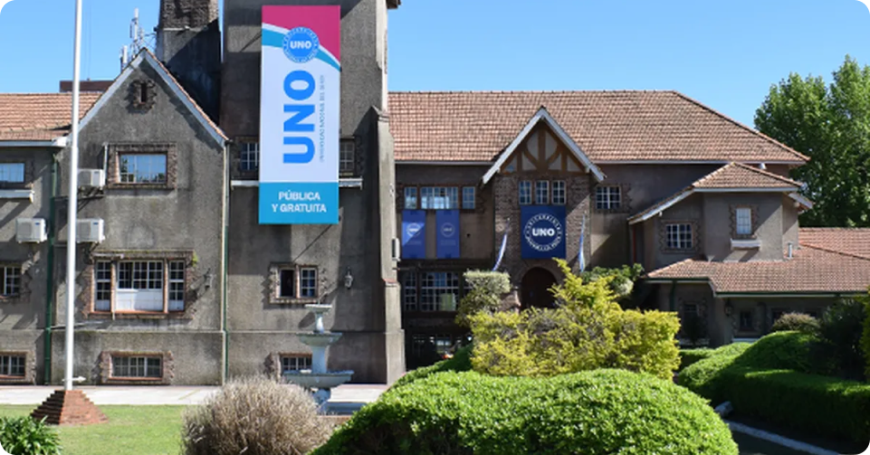

Universidad Nacional del Oeste (UNO)
Creada en 2009, está en Merlo y responde a las demandas educativas locales.
Carreras:
La UNO ofrece carreras que están orientadas a cubrir necesidades en áreas como la logística, la salud y la informática, todas con un fuerte enfoque práctico:
Ciencias Económicas y Gestión:
- Licenciatura en Logística
- Licenciatura en Administración y Economía
Salud y Seguridad:
- Licenciatura en Gestión de Servicios de Salud
- Licenciatura en Seguridad e Higiene en el Trabajo
Tecnología y Ciencias de la Información:
- Licenciatura en Informática
- Tecnicatura en Redes y Telecomunicaciones
Modalidades Disponibles y Datos de Contacto:
Modalidades de Estudio:
- Principalmente presencial, con opciones virtuales en áreas específicas.
Contacto:
- Página web: www.uno.edu.ar
- Dirección: Belgrano 369, Merlo, Buenos Aires
- Teléfono: (011) 0220-483-2671